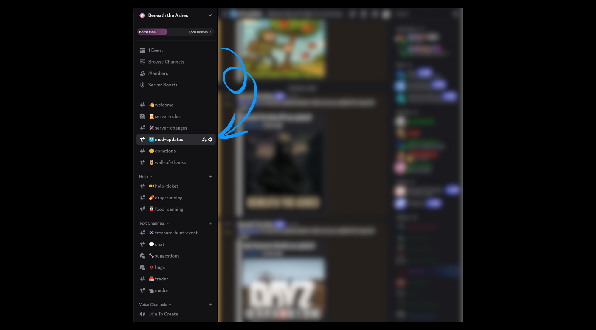
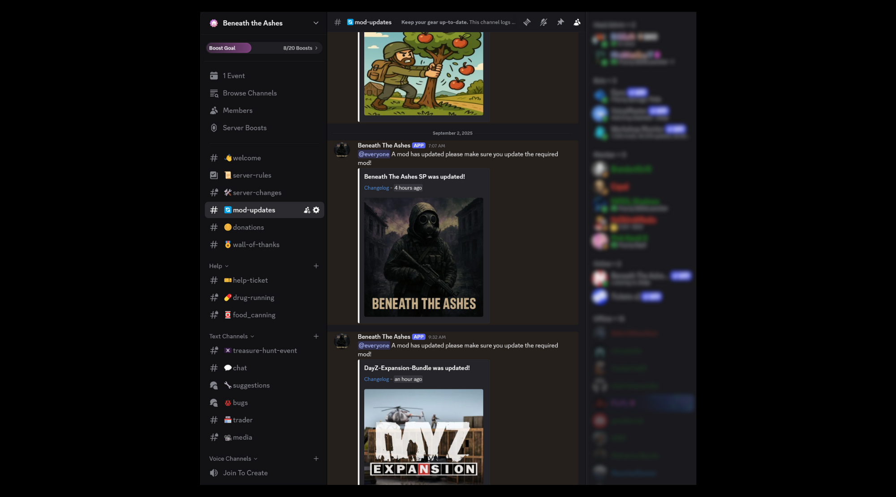
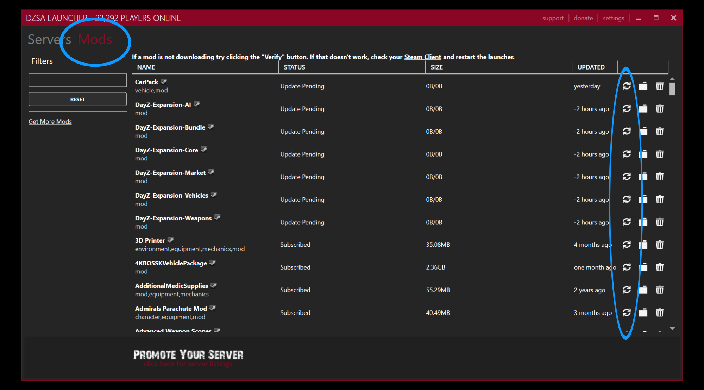
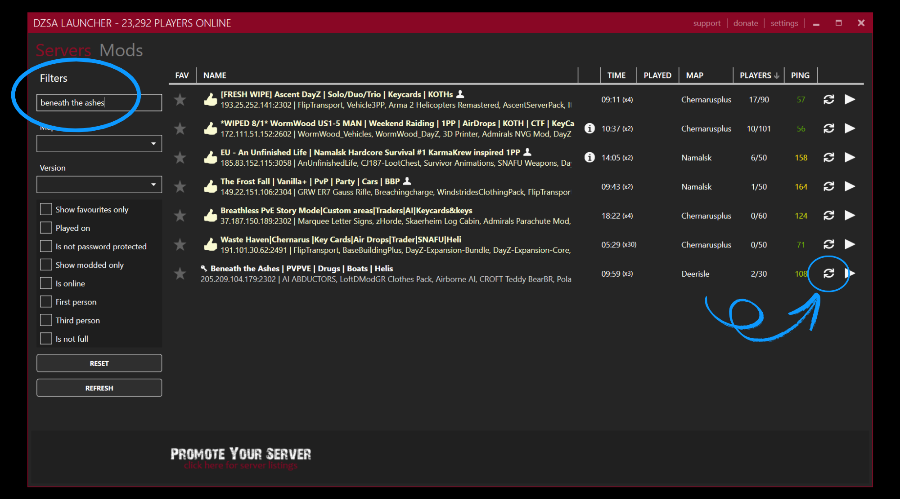
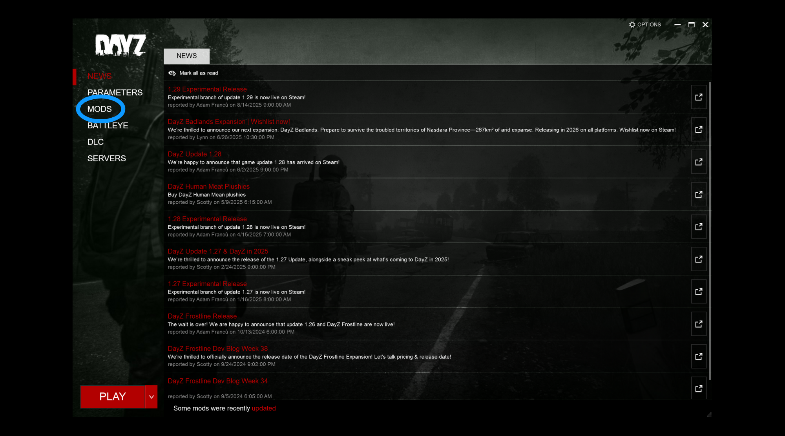
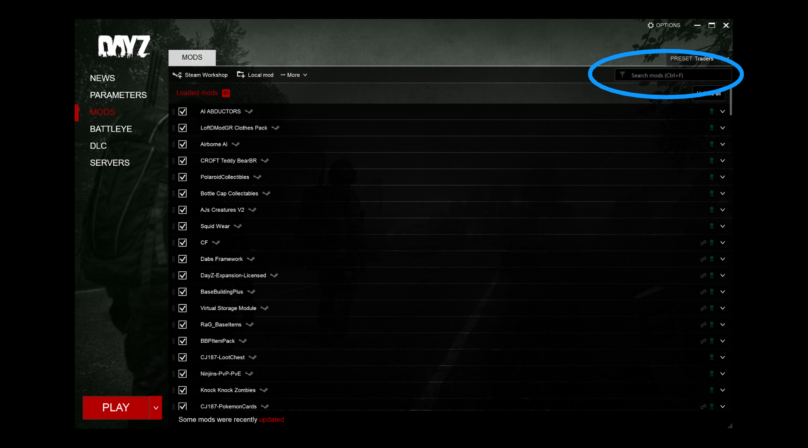
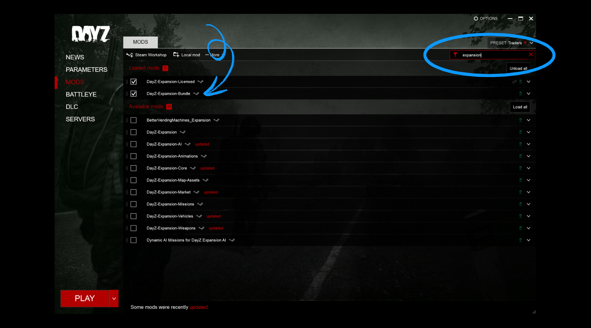
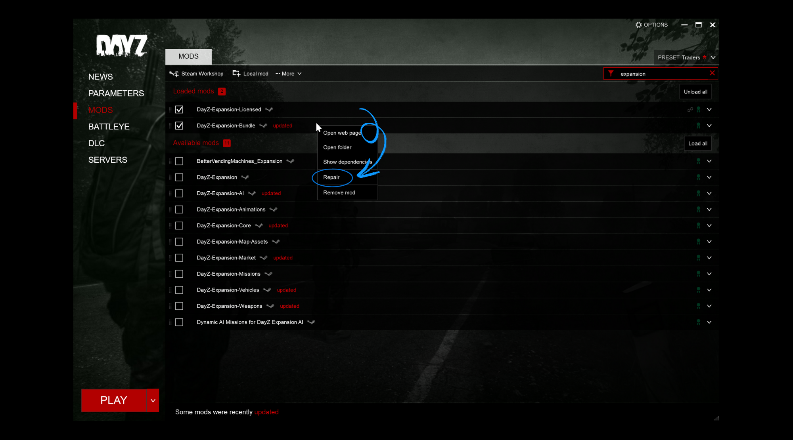
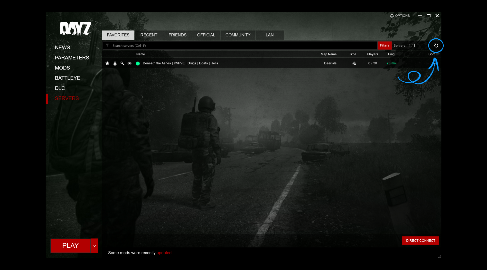

Updating
Your Mods
Keep your DayZ mods current so you can join Beneath the Ashes without missing files, outdated content or verification errors.
Before You Start
- Close DayZ completely before updating.
- Keep Steam open and signed in.
- Check #mod-updates for the exact mod named in the server notice.
Check Discord for Mod Updates
When a server mod changes, the update notice is posted in Discord. Read the notice before launching so you know which files need attention.

Click or tap to enlarge ↗Discord: open the #mod-updates channel. - Step 02
Read the bot notification
Use the bot notice to identify the mod that needs refreshing, then follow the launcher instructions on this page.

Click or tap to enlarge ↗Discord: read the bot’s update notice and note the affected mod.
DZSA Launcher
Using DZSA? Verify the affected mod, then refresh the server list and reconnect.
- Step 01
Open the Mods tab
Open the Mods tab.
- Step 03
Verify the mod
Click its circular-arrow Verify button.

Click or tap to enlarge ↗- Step 04
Refresh & rejoin
Open Servers, search for Beneath the Ashes, refresh, and join.

Click or tap to enlarge ↗DZSA: search for Beneath the Ashes, refresh, and join.
Official DayZ Launcher
Using the official launcher? Find the affected mod in Mods and use Repair, then refresh the server list and reconnect.
- Step 01
Open the Mods tab
Open the Mods tab from the left.

Click or tap to enlarge ↗Official launcher: open Mods. - Step 02
Search for the affected mod
Search for the affected mod.

Click or tap to enlarge ↗Official launcher: use the mod search field. - Step 03
Identify outdated or missing mods
Find the outdated or missing mod in the filtered list. Check for red updated labels shown in the screenshot.

Click or tap to enlarge ↗Official launcher: check the filtered list for the affected mod and red updated labels. - Step 04
Repair the affected mod
Right-click outdated or missing mods and choose Repair.

Click or tap to enlarge ↗Official launcher: right-click the affected mod and choose Repair. - Step 05
Refresh & play
Open Servers, refresh the list, select Beneath the Ashes, and choose Play.

Click or tap to enlarge ↗Official launcher: refresh the server list, select Beneath the Ashes, and choose Play.
Still Having Trouble Connecting?
- Close DayZ and your launcher.
- Unsubscribe from the affected mod in Steam Workshop, then subscribe again.
- Allow Steam to finish downloading the mod completely before attempting to reconnect.
Getting Additional Help
If you’re still experiencing problems, open a Help Ticket so our staff can assist you.
Open a Help Ticket ↗Back to contents ↑